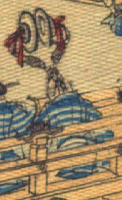

海老のような化物。頭部は薄茶色で、体に青と水色の縞模様の着物をまとい、座っている。頭頂から生えた節足の先で鉦を持ち、打ち合わせている。
著作者：J.Dautremer／出典：親書誌：U426_nichibunken_0118：Monseigneur sac de riz／日付：2006／資源識別子：U426_nichibunken_0118_0003_0015
Copyright (c)2010- International Research Center for Japanese Studies, Kyoto, Japan. All rights reserved.